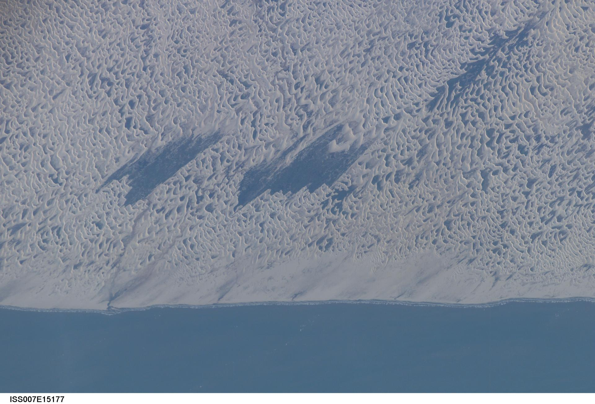
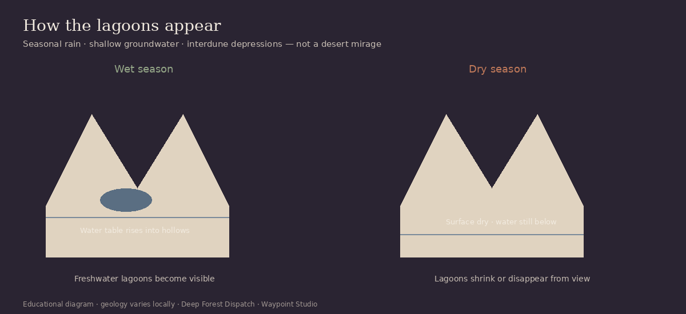
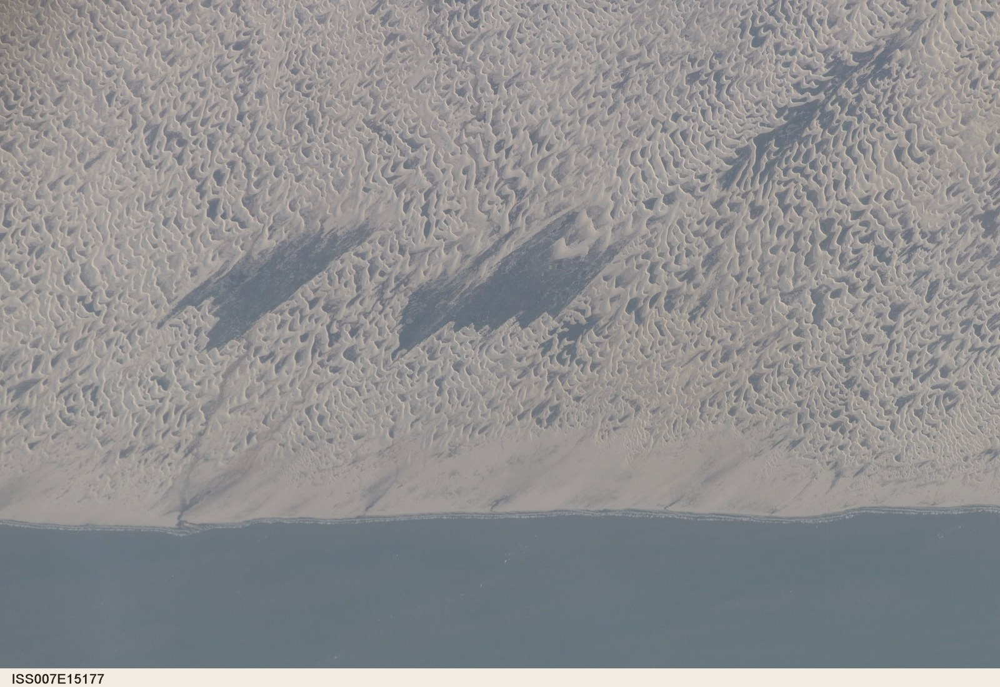
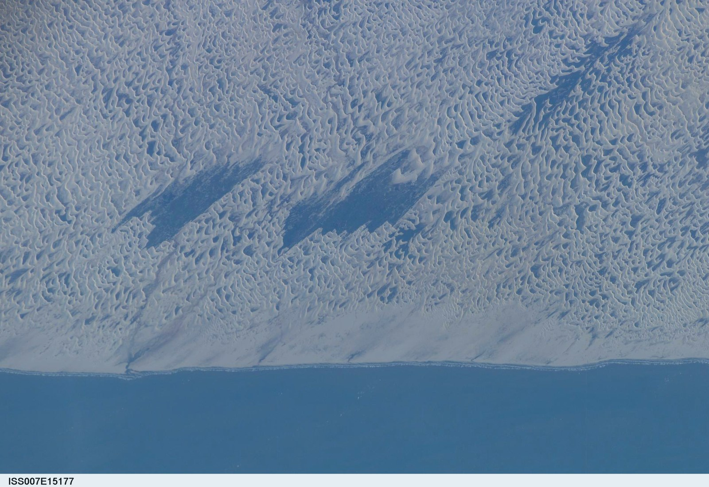

The visual mystery
From a distance, Lençóis Maranhenses can look like emptiness: pale dunes under hard light. Walk closer in the right season and the hollows fill with startling blue-green freshwater. The scene feels impossible until you stop treating “desert” as a synonym for “sand.”
Sand is a surface texture. Climate is a water budget. Those two facts are easy to confuse in a photograph — and that confusion is exactly why this place rewards a slower look.

Twice London’s rain
London’s long-term average precipitation is roughly on the order of ~600 mm per year. Reported averages for the Lençóis Maranhenses region are commonly cited around ~1,200–1,600+ mm per year, depending on station and period — roughly twice London’s rainfall (or more).
That comparison is meant as orientation, not a precise contest. Local totals vary year to year. The important point holds: this is not an arid climate wearing a sandy costume.
Where it is
Lençóis Maranhenses National Park sits along Brazil’s northeastern Atlantic coast in the state of Maranhão. The name — “bedsheets of Maranhão” — nods to the ripple of white dunes that look, from above, like linens shaken out across the shore.
Why it isn’t actually a desert
Deserts are defined by dryness — typically very low annual precipitation and high evaporative demand — not by the presence of dunes. Many of Earth’s driest places have little sand. Many sandy places are not deserts.
Lençóis Maranhenses receives a strongly seasonal rainfall regime. For part of the year, rain fills interdune depressions. For part of the year, the visible water retreats. The sand remains. The climate label should follow the water, not the Instagram palette.
Where all that sand comes from
The dune field is a coastal sand system fed by sediment along the Atlantic margin and reworked by persistent winds. Fine sand is lifted from beaches and older deposits, then driven inland into ridges and parabolic forms.
DFD keeps this explanation restrained: the sand has coastal and regional sediment pathways, and winds keep redistributing it. Exact grain-by-grain sourcing can be more nuanced than a single origin story.
Where the water comes from
The lagoons are freshwater, fed primarily by seasonal rainfall and by a shallow groundwater system beneath and between the dunes. When rains raise the water table, water becomes visible in the low points.
It is tempting to declare one impermeable layer as “the” mechanism. Reality is more local: water storage and movement depend on dune structure, underlying materials, and season. The honest summary is rainfall + shallow water table + interdune topography — not a single magic rock.
How the lagoons appear
Picture the dunes as a wrinkled sheet. Rain adds water to the system. The water table rises. Where the land surface dips below that water level, a lagoon appears. Where dunes later migrate over a hollow, last year’s pool may vanish from the map and reappear elsewhere.

The landscape moves
Trade winds keep the dunes migrating. Reported movement can reach tens of meters per year in parts of the field — enough that lagoons are not permanent addresses. The park is a choreography of sand and season, not a fixed postcard.
That motion is why return visits feel new: the geometry changes, even when the climate pattern rhymes.
Watch it change from space
Satellite and ISS views make the seasonal contrast intuitive: the same dune field can read as pale and “empty,” then suddenly laced with water. Deep Forest Dispatch’s wet/dry treatment below is an educational same-place comparison derived from NASA ISS imagery — built to preview the Landsat dry/wet storytelling used in production, with honest provenance.


Explore further
If this landscape made you want to read weather honestly, study light for photography, or practice interpreting landforms, Waypoint’s tools are ready when you are.